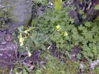
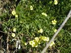
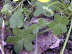
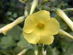
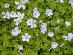

Bermuda buttercup
Oxalis pes caprae (previously O. cerna)
Other names
soursob
Description
Large taproot with numerous small bulbs at top, 3 spotted leaflets per leaf, all inverted heart shape. Flowers are bright yellow or golden sometimes with red margins, in large terminal umbrels. Does not form seed in NZ.
Similar plants
Several other Oxalis species are common weeds.
Distribution
Both islands of NZ, especially N. Originally a garden escape, now a common weed in lowland areas.
Toxin
The leaves contain small vesicles containing concentrated oxalic acid. Although O. pes caprae has caused chronic poisoning in Australia, it has not been reported in NZ. Ingestion of oxalic acid either binds dietary calcium to form insoluble calcium oxalate which is not absorbed in the intestine and then passed out in the faeces, or is broken down by Oxalobacter formigenes which uses oxalates to produce energy, carbon dioxide and formate. When the amount of oxalate eaten is greater than can be broken down it is absorbed and binds with calcium in the blood stream to form insoluble calcium oxalate. This removal of soluble calcium in the blood (usually 2 – 2.5mM) results in a life threatening hypocalcaemia in which leads to twitching followed by death. Changes occur in the renal tubular cells though these do no contribute to acute death
Species affected
Ruminants, possibly horses.
Clinical signs acute
The clinical signs are not unlike those of hypocalcaemia. Animals stagger and become recumbent, there is a nasal discharge, muscular spasm develops and breathing becomes difficult. Animals usually die in a coma. The injection of calcium borogluconate causes a temporary response in some animals, which subsequently relapse and die due to acute renal failure. Clinical signs of renal tubular necrosis are oliguria, depression, vomiting, azotaemia, hyperkalaemia and cardiac failure.
Clinical signs chronic
Horses, unlike ruminants, have no destructive mechanism for oxalates so that the regular ingestion of oxalate containing plants will cause a serious precipitation of calcium in the gut, resulting in an overall negative calcium balance. After several weeks or months of grazing oxalate containing plants, horses may develop a nutritional secondary hyperparathyroidism which produces osteodystrophia fibrosa. Horses cannot be reared satisfactorily on oxalate containing pastures. This is commonly reported in Australia in sheep grazing pastures dominated by Oxalis pes caprae. Sheep usually tolerate the plant well, but its persistent intake produces reduced kidney function potentially leading to renal failure. Death is uncommon. Build up of calcium oxalate crystals slowly due to long term low level exposure. Animals may need to graze the pasture for several months before signs of poisoning develop.
Post mortem signs
Severe pulmonary congestion with copious amounts of froth in the trachea and bronchi. Marked hyperaemia of the mucosa of the fore stomachs and intestines. The kidneys are usually swollen and have a pale cortex.
Diagnosis
History of ingestion and identification of plant material in the gastrointestinal tract.
Differential diagnosis
Other poisonous plants, especially those containing oxalates. Docks, rhubarb, taro, elephant’s ear, oak. Other causes of acute respiratory failure.
Treatment
When the animal is seen soon after ingestion decontamination to reduce absorption is recommended. Activated charcoal or limewater (calcium hydroxide) to prevent oxalate absorption is useful. Supportive therapy for hypocalcaemia and nephrosis may be indicated.
Prognosis
If advanced clinical signs are present poor prognosis.
Prevention
Prevent access to plants especially if stock are hungry.
References
Conner HE. (1992) Poisonous Plants in New Zealand. Revised 2nd Edition. GP Publications Ltd.
Veterinary and Human Toxicology, 1994, 36 (1). 23.
 |
 |
|
 |
 |
|
|
||
 |
|
|